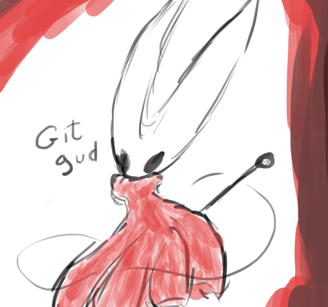

Leonardo Müller
About Me
Tech student from Brazil, currently learning front end web development at The Odin Project and doing "Análise e Desenvolvimento de Sistemas" at Universidade Cruzeiro do Sul.
Always curious, always learning.

Tech student from Brazil, currently learning front end web development at The Odin Project and doing "Análise e Desenvolvimento de Sistemas" at Universidade Cruzeiro do Sul.
Always curious, always learning.